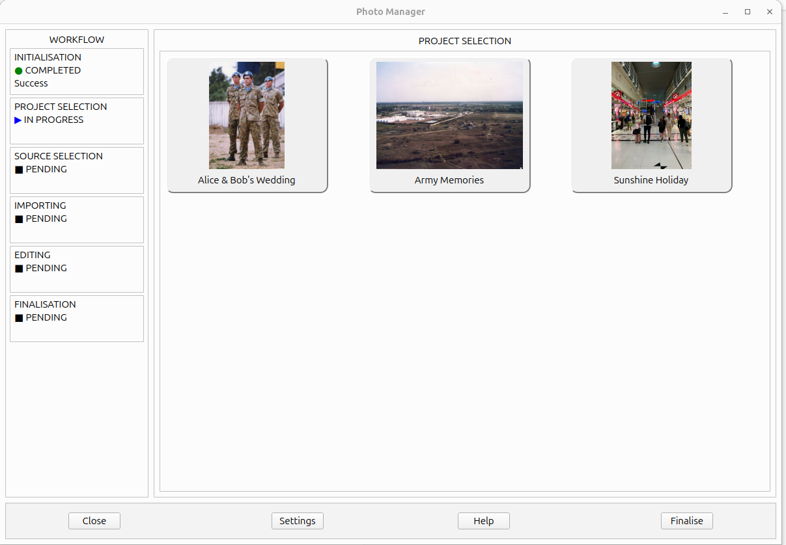

The main Photo Manager window provides an overview of the workflow, the current project and the controls used to work with your photos.

The Workflow panels on the left-hand side of the Photo Manager window provide a summary of the application's progress and the current project. They help you see which stage is active and what has happened so far.
Indicates whether Photo Manager has started successfully and located the configured workspace. A completed status with a Success message confirms that initialisation has succeeded.
Shows the status of project selection and, once a project is selected, displays the name of the project being worked on.
Displays the importer and source identifier associated with the project.
Displays the number of photographs registered in the project and the number available to Photo Manager. These numbers should normally be the same.
Indicates whether the editing stage is pending or in progress.
Indicates whether the finalisation stage is pending or in progress.
Click Close to exit Photo Manager. A confirmation dialog asks whether you are sure you want to close the application. Click Yes to close Photo Manager, or No to return to the application.
Click Settings to open the Application Settings window. These settings apply to Photo Manager as a whole.
Click OK to accept the settings, or Cancel to close the window without applying changes.
Click Help to open the Photo Manager help website in your web browser. The website provides guidance on using Photo Manager and its features.
Click Finalise when you have finished working on a project. Photo Manager checks whether the project contains any unedited photographs. If it does, a warning displays the number of unedited photographs and asks whether you want to continue.
You can choose to cancel finalisation and return to the project, or continue despite the unedited photographs. If all photographs have been edited, or you choose to continue, a directory browser opens so you can select where the photographs should be moved.
Once finalisation is completed, the photographs are moved to the selected destination and the project is removed from the Photo Manager workspace.
For the full procedure, see Finalising a Project.